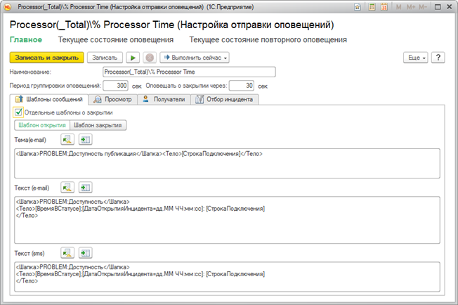
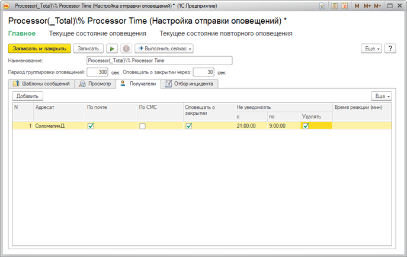

Справочник "Оповещения" предназначен для настройки оповещений, срабатывающих при открытии инцидентов и в случае, если инциденты остаются открытыми.

Необходимо установить произвольный отбор по полям инцидента и типа инцидента. Производительным способом является отбор по конкретному типу инцидента. Используйте отбор по типу инцидента там, где это возможно.
Текст оповещения формируется из трех реквизитов: Тема (e-mail), Текст (e-mail) и Текст (sms). При оповещении сотрудника по почте тема письма будет заполнена значением реквизита Тема(e-mail), а тело письма - значением реквизита Текст(e-mail). В случае оповещения сотрудника с помощью sms - текст короткого сообщения будет заполнен значением реквизита Текст(sms). Во всех трех реквизитах возможно использовать шаблоны замены:
Также необходимо указать список получателей оповещения и способ доставки.

Для каждого получателя отдельно можно указать диапазон времени, внутри которого оповещения не будут отосланы. За данную настройку отвечает группа реквизитов "Не уведомлять". Диапазоны вида: 23:00 .. 05:00 и 12:00 .. 13:00 отрабатывают корректно. Если начало диапазона больше, чем конец - предполагаем переход через сутки. Если в данной группе реквизитов флаг "Удалять" установлен в ИСТИНА, то все сообщения за отключенный период для данного получателя будут удаляться. В случае если "Удалять" установлен в ЛОЖЬ, то все сообщения за указанный период будут отправлены после завершения периода неуведомления.
Для каждого получателя можно указать минимальное время нахождения инцидента в статусе, после которого будет отослано оповещение получателю. Например, можно указать нулевое время для сотрудника, напрямую отвечающего за работоспособность того или иного показателя: в этом случае оповещение будет отослано немедленно после открытия инцидента. Руководителю сотрудника можно указать минимальное время, равное нормативному времени реакции на инцидент со стороны службы поддержки. Таким образом, руководитель получит уведомление только тогда, когда инцидент не удалось устранить за регламентное время.